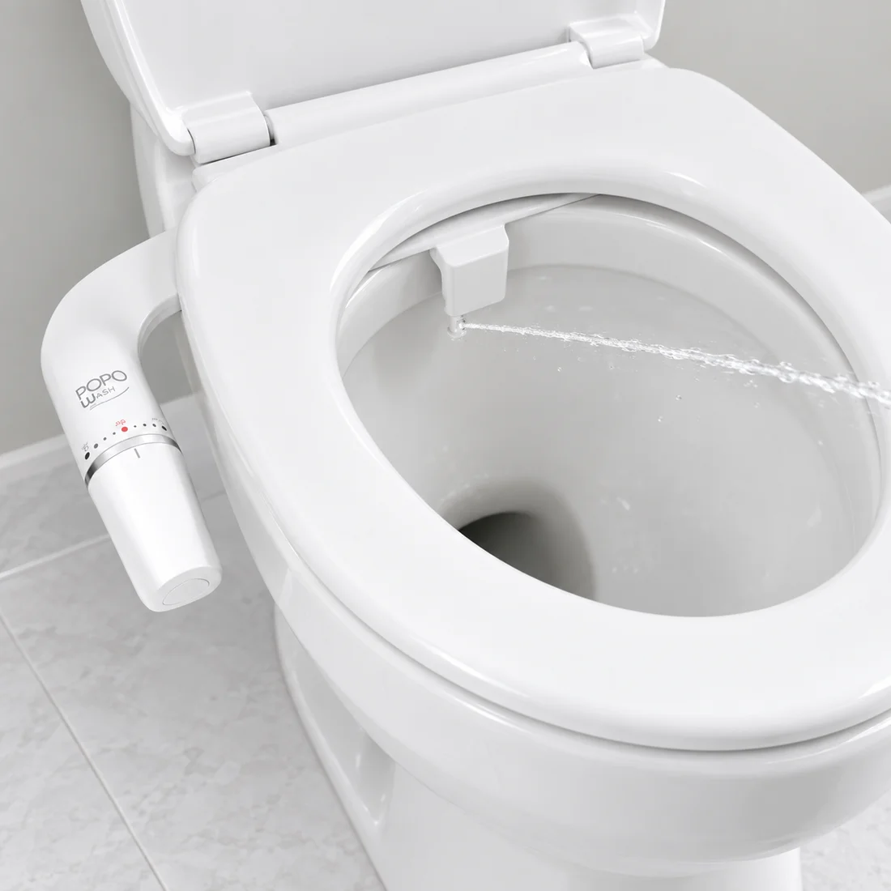
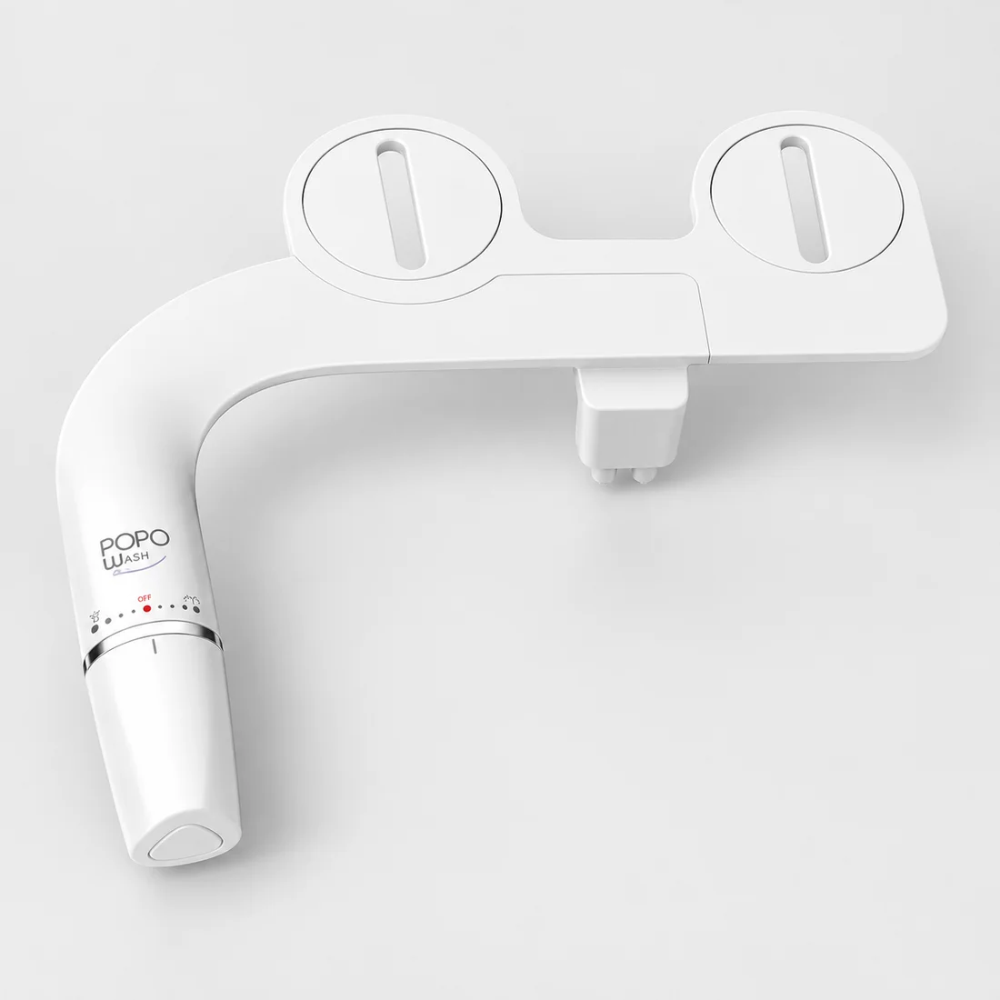
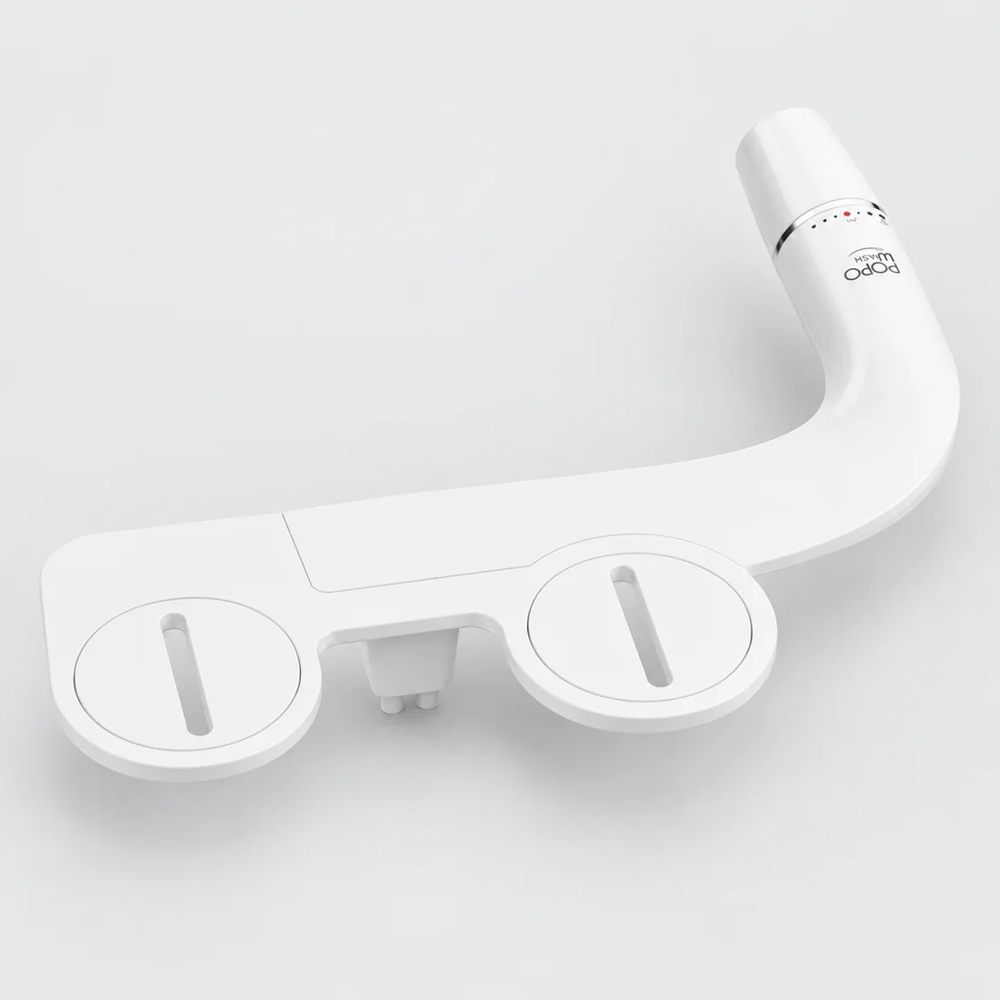
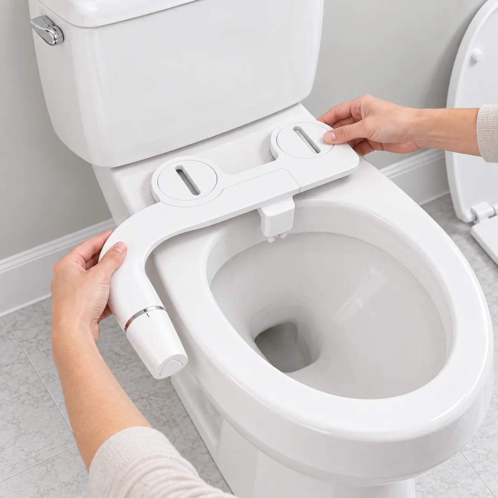

★★★★★
“Pensé que instalarlo iba a ser un cacho. Era mucho más simple.”
Instalación · Ejemplo de reseña
Lávate con agua. Gira, regula y listo.
Fácil de instalar. Cómodo desde el primer uso.
“Pensé que instalarlo iba a ser un cacho. Era mucho más simple.”
Instalación · Ejemplo de reseña

“Girar la perilla y sentir la diferencia. No vuelvo al puro papel.”
Uso diario · Ejemplo de reseña

“Ahora el confort es para secarme. El rollo dura mucho más.”
Menos papel · Ejemplo de reseña
Una pasada. Otra. Y otra más.
El confort retira, pero no lava con agua.
Si necesitas seguir pasando papel para sentirte limpio, el costo se repite en cada compra. Tu rutina puede ser más simple.
Dale agua al asuntoEjemplo editable. Ingresa el gasto de tu hogar en papel higiénico.
Cinco razones para darle menos trabajo al confort
y más limpieza a tu día.
Un chorro dirigido para lavarte después de ir al baño. La limpieza deja de depender de tantas pasadas.
Limpieza con agua
La perilla queda a tu lado. Ajusta el agua poco a poco hasta encontrar una presión cómoda para ti.

Se instala bajo el asiento de un inodoro compatible. Sumas limpieza sin remodelar el baño.
Revisa la compatibilidad*Funciona con la presión del agua. Un mecanismo simple, sin otra cosa que cargar ni conectar a la luz.

Usa agua para lavar y un poco de papel para secar. Reducir el consumo puede bajar tu cuenta de higiene.
Simulación, no ahorro garantizado. No incluye el precio del bidet ni el costo del agua.
$72.000 en un año
Un pequeño cambio en tu baño. Una rutina mucho más fácil.

Todo lo que probablemente
te estás preguntando.
PopoWash se monta bajo el asiento. La compatibilidad depende del espacio disponible, los anclajes y la conexión de agua de tu inodoro. Las medidas exactas del modelo están pendientes de confirmación; revísalas antes de comprar.
No. Es un bidet mecánico que funciona con la presión de tu suministro de agua, sin pilas ni electricidad.
Está pensado para instalarse bajo el asiento, sin remodelaciones. Debes cerrar el agua, fijar el bidet, conectar el suministro y comprobar que no existan fugas. El tiempo y las herramientas dependen de tu baño. Si tienes dudas con la conexión, pide ayuda a un instalador.
Este modelo mecánico no calienta el agua. Usa el agua de la conexión a la que está instalado, a la temperatura del suministro.
No necesariamente. La idea es usar agua para lavar y una pequeña cantidad de papel para secar. El consumo final depende de tus hábitos.
Estamos preparando el lanzamiento. El precio, el contenido de la caja, los despachos y la garantía se confirmarán antes de habilitar las compras.
Más agua. Menos papel.
El próximo cambio de tu baño empieza aquí.
Estamos preparando el lanzamiento.
Precio y disponibilidad por confirmar.